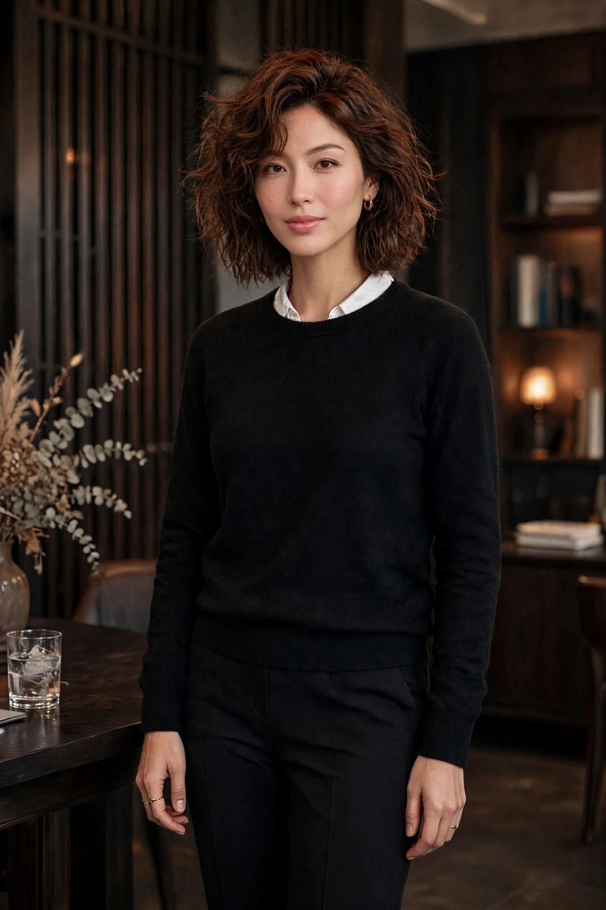
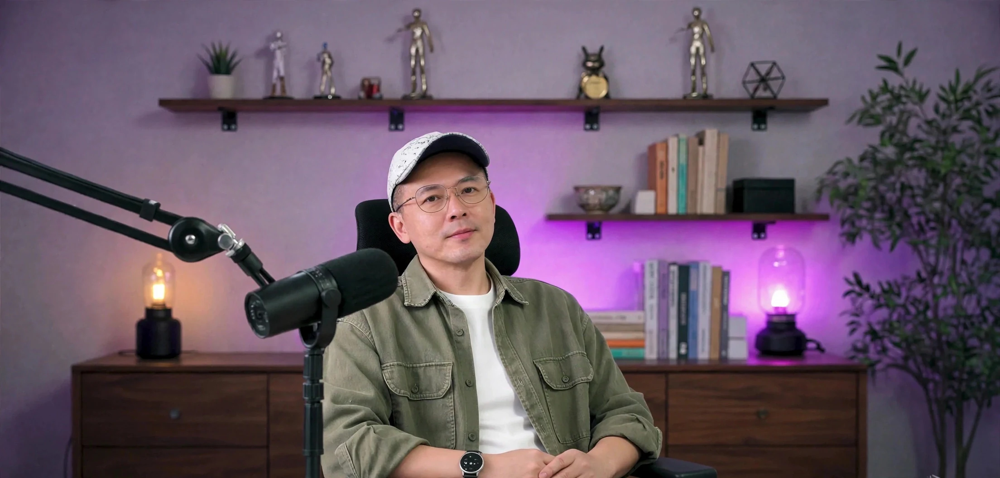

关于美
On beauty
看清审美标准，以及被标准遮住的自己。
Looking at aesthetic standards—and the person beyond them.
从 MR.TENG 的真实思考，到 3T 的原创人物世界。我们创作节目、故事与知识作品，让值得被记住的思想和人物持续生长。
From MR.TENG's real-world perspective to 3T's original character world. We create programs, stories and learning experiences built around ideas and people worth remembering.


以作者建立思想的辨识度，
以人物和故事，打开作品的生命力。
An author gives ideas a distinctive voice.
Characters and stories give them a world to live in.
从美的选择，
到人生的主导权。
From choices about beauty.
To choices about your life.
谁在定义你的美？以真实作者 MR.TENG 的思考为源，一位原创角色追问、质疑与交锋。从审美、身体与情绪出发，谈论那些最终属于自己的选择。
Who gets to define your beauty? Rooted in MR.TENG's perspective, an original character asks, questions and challenges. A dialogue about beauty, the body, emotion and the choices that are your own.

看清审美标准，以及被标准遮住的自己。
Looking at aesthetic standards—and the person beyond them.
把情绪、证据与代价，放回同一张桌上。
Bringing emotion, evidence and consequences into the same conversation.
讨论他人的期待，也保留自己的决定。
Making room for your decisions amid other people's expectations.
她们可以重新体验命运，却不能轻易摆脱体验留下的后果。三位当代女性，与三段历史人生相遇，展开关于关系、选择与第二人生的原创故事。
They can experience another life, but cannot simply leave its consequences behind. Three contemporary women encounter three historical lives in an original world of relationships, choices and second lives.
由人物节目与故事展开，向图文、音频及互动叙事延伸。三位人物均为原创虚构角色，相关作品正在开发。
A world unfolding through character-led programs and stories, with visual, audio and interactive extensions in development. All three are original fictional characters.
认识人物，探索第二人生Meet the characters. Explore second lives.从系统课程认识我们的知识表达。中英文作品目前通过 Whop 提供，先试听，再选择自己的学习方向。
Discover our approach through structured courses in Chinese and English. Currently available through Whop—start with free lessons and find your next subject.
AI 视频制作、AI Agent 营销、GEO & GTO 信源实战。
AI video production, AI agent marketing, GEO & GTO content sources.
TOOLS → PRACTICE → WORK孙子兵法、多方博弈、商业工具与内容信任。
Sun Tzu, multi-actor strategy, business tools and content-led trust.
STRATEGY → CHOICE → ACTION衰老科学与证据、《物理不说谎》及机制思考。
Aging science and evidence, physics and the mechanisms behind our world.
MECHANISM → MEASUREMENT → EVIDENCE课程语言、内容、价格及访问权益以各商品页为准。健康与衰老主题为知识教育。Course language, content, pricing and access terms are listed on each product page. Health and aging topics are educational.
除了创作自己的作品，我们也与专家、顾问及培训机构合作，把已有的工作坊、经验与课件制作成课程资产。支持中文、英文与白标项目。
Alongside our original work, we partner with experts, consultants and training firms to turn workshops, experience and presentations into course assets. Chinese, English and white-label projects are available.
先确认目标学员、已有材料与范围，可从付费试点开始。海外项目可由香港公司签约，具体主体与条款按项目确认。We first agree on learners, materials and scope. Paid pilots are available. Overseas projects can be contracted through our Hong Kong company, with entity and terms agreed per project.
大纲、学习路径、逐课讲稿与知识结构。
Outlines, learning paths, lesson scripts and knowledge maps.
课件、图示、案例及屏幕演示。
Presentations, diagrams, examples and screen demonstrations.
学员手册、练习、题库及约定源文件。
Learner guides, exercises, quizzes and agreed source files.
客户课程以教学材料为画面主体，可用授权静态头像与旁白；此服务不含动态数字讲师或口型同步形象。合成声音须取得项目书面授权。Client courses center on teaching materials, with authorized static headshots and narration if agreed. This service excludes talking avatars and lip-synced likenesses. Synthetic narration requires written project authorization.
本地优先的文档转换、脱敏与 AI 交接工具。
Local-first document conversion, masking and AI handoff.
Brand Shuttle GEO ↗面向搜索与 AI 可见性的网站诊断和内容工具。
Website diagnosis and content tools for search and AI visibility.
Schema Sandbox Research ↗AI Agent 执行边界方法论、协议草案与引用指南。
Open methodology, protocol drafts and citation guidance for AI agent execution boundaries.